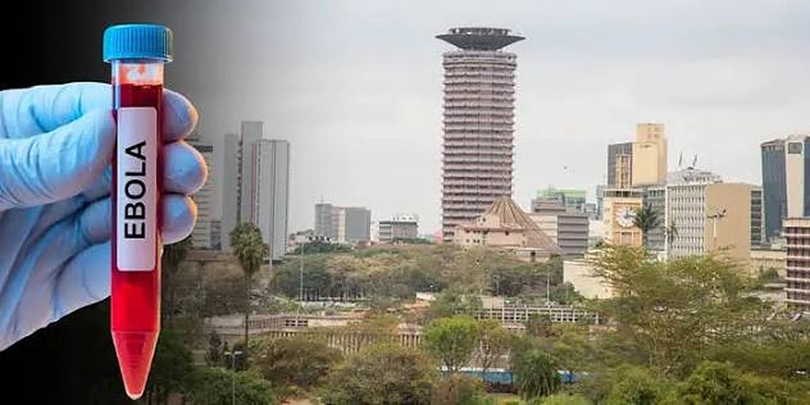

Illustration: Onyango George / EA Hospitality Pulse
Kenya moved a tier on health, not crime. That decides who cancels, and when.
Washington's own change note says Kenya went from Level 2 to Level 3 on 19 October because of health risks, not the crime and kidnapping language that led the coverage. The distinction matters, because a health trigger reverses on a clock while the institutional rules it fires do not.
On the closing day of the Magical Kenya Travel Expo, in a hall of buyers who had flown in to write business for 2027, Rebecca Miano gave the answer the room wanted. Kenya's Cabinet Secretary for Tourism and Wildlife was being asked about the Ebola case confirmed in Nairobi two days earlier, on 6 October, in a man who had arrived by air from the Democratic Republic of Congo. "We have reasons to consider this an isolated case," she said, and offered a pledge alongside it: "No effort and vigilance will be spared to ensure that Kenya continues to remain a safe destination."
Eleven days later, on 19 October, the United States Department of State renewed its travel advisory for Kenya and moved it up a tier, from Level 2 to Level 3, Reconsider Travel. The headline that travelled fastest came from the advisory's own first line, which asks Americans to reconsider travel "due to risk of health, crime, kidnapping, terrorism, unrest, and traffic safety." Fox News led on crime and sexual assault. A dozen trade sites led on safari risk. Almost nobody led on the sentence the State Department buried further down, and which the US embassy in Nairobi repeated on 20 October without elaboration: "The level was changed from Level 2 to Level 3 due to health risks."
That sentence is the whole story, and it is worth more to a lodge owner than every line of commentary written since. Crime, kidnapping, terrorism, unrest and traffic safety were all cited at Level 2. They are furniture. The advisory's do-not-travel list has not changed shape either: Eastleigh and Kibera in Nairobi, the counties of Garissa, Wajir, Mandera, Lamu and Tana River with Tsavo carved out, Kilifi north of the C103, the coast north of Malindi, bandit country in West Pokot and western Turkana, and a fifty-kilometre strip along the Ethiopian border. None of that is new, and none of it covers the Mara, Amboseli, Laikipia, Diani or Nairobi's hotel districts. What is new is a health notice, and health notices expire.
That matters because the two kinds of trigger behave completely differently. A security downgrade reflects a judgement about the state's capacity to protect visitors, and no clock runs on it. A health downgrade attaches to an outbreak, and outbreaks have an arithmetic. Two incubation periods, forty-two days, after the last confirmed case tests negative twice, the World Health Organization declares the outbreak over. That is a date an operator can plan against, which is more than can be said for a kidnapping risk assessment. Read correctly, Kenya's Level 3 is the most reversible kind of bad news the country could have received.
Read incorrectly, it has already started doing damage that will not reverse on the same schedule, and this is where the sector's attention is in the wrong place. Advisory tiers do not harm a destination mainly through sentiment. They harm it through rules written years ago by people who will never see the advisory text, only the number. Indiana University's student international travel safety policy, a document last reviewed in January 2023 and written long before anyone in Bloomington had heard of Bundibugyo virus, states that the university "will not offer or support study abroad programs in, or travel through, countries under State Department Level 3 or 4." An exemption exists, evaluated case by case through the Safety and Responsibility Committee of its Overseas Study Advisory Council, and requests must be filed at least two months before departure. Hundreds of American universities, insurers, corporate travel desks and public-sector travel approvers run some version of that rule. The tier is the trigger. The prose is not read.
Set the two clocks side by side and the problem is obvious. The epidemiological clock could plausibly close this out inside two months. The institutional clock needs two months of notice just to consider an exemption, and it is now processing January and February departures. A group that cancels this week because a policy pointed at a number will not rebook the moment the number changes, because the committee that would have to re-approve it has already moved on to the next intake. The bookings at risk are not the Americans who were going to come in three weeks and are now nervous. They are the institutional parties whose paperwork was due this fortnight: the study-abroad semesters, the university field schools, the NGO and donor delegations, the insured conference groups, the corporate incentive trips whose duty-of-care sign-off is a form with a tick box for advisory level.
The stakes are concentrated. Kenya's own Tourism Research Institute recorded 306,501 American arrivals in 2024 out of 2,394,376 in total, making the United States comfortably the country's single largest source market, ahead of the United Kingdom's 180,639 in fourth place. Total tourism earnings for that year were KSh 452.2 billion. There is no diversification story that makes a tier change in Kenya's biggest market a second-order event.
What makes the asymmetry sharper is that the United Kingdom, looking at the same outbreak and the same ministry briefings, did not move Kenya's tier at all. Same epidemiology, two institutional answers. That ought to settle an argument the sector keeps having with itself, which is whether an advisory is a verdict on a destination. It is not. It is an output of the issuing government's own rulebook, and this month the American rulebook had a health input the British one weighted differently.
On the facts, the Kenyan response has been better than the coverage implies. By 20 October the Ministry of Health had nine confirmed cases, all in a single cluster, every one of the eight secondary infections traced back to the index case who arrived in Nairobi on 3 October. The WHO's disease outbreak news of 23 October recorded 135 contacts identified, traced and quarantined, with no evidence of transmission outside the cluster. Patrick Amoth, the Director General for Health, confirmed the ninth case, a 24-year-old man who tested positive on 19 October while already in quarantine as a contact, which is what containment looks like when it is working: the virus finding only people the state had already found. "Kenya remains open, with no restrictions on travel, trade or public gatherings," Amoth said. The first cohort placed in quarantine on 6 October was due to begin going home from today. Neema Rusibamayila Kimambo, the WHO representative to Kenya, said of the contact group that "we have not had any infections in that group."
The epidemiologists have also been blunter than the advisories. Marion Koopmans, the Dutch virologist who sits on the WHO's Ebola emergency committee, dismissed the idea that sharing a terminal creates exposure: "Random presence at the same location, a large airport, is not a supported epidemiological link." Simon King, speaking in sessions the African Travel and Tourism Association ran for its members earlier this year, made the point that matters most to a safari operator: "there has never been a recorded case of a leisure traveller contracting Ebola during ordinary travel." Virginia Messina, ATTA's chief executive, put out a statement on 20 October noting that her own staff were travelling in the region and that "Kenya remains open to international visitors," while reminding members that "Ebola is not an airborne disease. It is transmitted through direct contact with the blood or bodily fluids."
None of which licenses complacency, and two developments since the advisory show why. On Friday Kenya recorded its second death, a 65-year-old woman who was a close relative of the index patient, Kenya's third confirmed case, who had developed symptoms on 13 October while already under quarantine. The count stands at nine cases and two deaths, which is one more death than the WHO's published figure, because the WHO's bulletin lags the ministry's announcements. More to the point, it makes Miano's 8 October framing look like what it was: a forward statement about an outbreak, made before the outbreak had finished telling anyone what it was. The lesson is not that she was dishonest. It is that nobody selling a destination should put their credibility behind an epidemiological forecast, because the virus is not a party to the marketing plan.
The second development is operational, universal, and almost entirely missing from the Kenyan conversation. From 23:59 on 3 November, under a Centers for Disease Control and Prevention requirement communicated to airlines on 22 October, every passenger on a flight bound for the United States, from anywhere, including pre-clearance ports, must complete a declaration confirming they have not been in the Democratic Republic of Congo in the preceding 21 days. Carriers must deny boarding to anyone who does not submit it and must retain each declaration for 42 days after arrival. That lands on American guests leaving Nairobi, Entebbe, Kigali, Zanzibar and Dar es Salaam irrespective of Kenya's advisory tier, and it will generate its first wave of missed flights among exactly the guests least likely to have read an airline email: the ones on a multi-country itinerary who are not sure, at the check-in desk, what counts as having been in the DRC.
Uganda has moved too, and the scope is worth reading carefully in both directions. On 24 October Kampala reinstated mandatory traveller locator forms for all arrivals regardless of origin, and barred travellers with a recent history of travel to the DRC from transiting the country. Prof Charles Olaro, the Director General of Health Services, warned that "applicable provisions of the Public Health Act will be invoked where public health requirements are breached." Reported alongside Kenya's second death, that read in several places as Uganda restricting Kenyan traffic. It is not. The transit bar is scoped to DRC travel history. The measure that touches Kenyan and regional traffic is the locator form, which is an administrative friction and not a closure. Operators who misread the scope in the alarmist direction will frighten clients for nothing, and operators who misread it in the reassuring direction will put a guest on a routing that does not work.
All of which points to the same conclusion, and it is not the one the sector reaches for. The useful work this fortnight is not persuading Washington, nor publishing another assurance that Kenya is safe, which is true and already said. It is sorting the forward book by counterparty type rather than by nationality. Every reservation sitting behind an institutional rule, a university policy, a corporate travel desk, a government approval, an insured group, needs a dated evidence pack in the hands of whoever fills in the form: the change note attributing the tier to health, the containment numbers, the WHO's standing advice against travel and trade restrictions, the geography of the do-not-travel list against the itinerary actually sold. Those are the bookings with deadlines this month. The discretionary leisure traveller needs honest information and will mostly take it.
And the unwind should be planned for as a negotiation rather than an announcement. Uganda learned this earlier in the year, when the formal end of its own outbreak did not end the restrictions imposed because of it, and each government unwound on its own timetable. Kenya's Level 3 will lift when a committee in Washington decides it lifts, which is not the day the WHO signs off. Plan the recovery as a queue, and the only question worth asking now is whether your paperwork is ready for the front of it.
📣 Telegram 💬 WhatsApp 💼 LinkedIn 📚 All guides